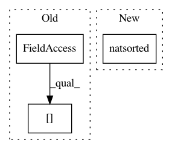

b5cf5b5a239bfeb3668c9ecb872683e149f7fab8,scanpy/tools/louvain.py,,louvain,#Any#Any#Any#Any#Any#Any#Any#Any#Any#,9
Before Change
key_added = restrict_key + "_R" if key_added is None else key_added
adata.obs[key_added] = adata.obs[restrict_key].astype("U")
adata.obs[key_added].iloc[restrict_indices] = "-".join(restrict_categories) + ","
adata.obs[key_added].iloc[restrict_indices] += groups.astype("U")
adata.obs[key_added] = adata.obs[key_added].astype(
"category", categories=natsorted(adata.obs[key_added].unique()))
adata.uns["louvain"] = {}
After Change
all_groups.iloc[restrict_indices] = new_groups
adata.obs[key_added] = pd.Categorical(
values=all_groups,
categories=natsorted(all_groups.unique()))
adata.uns["louvain"] = {}
adata.uns["louvain"]["params"] = {"resolution": resolution, "random_state": random_state}
logg.info(" finished", time=True, end=" " if settings.verbosity > 2 else "\n")
In pattern: SUPERPATTERN
Frequency: 4
Non-data size: 3
Instances
Project Name: theislab/scanpy
Commit Name: b5cf5b5a239bfeb3668c9ecb872683e149f7fab8
Time: 2018-05-18
Author: f.alex.wolf@gmx.de
File Name: scanpy/tools/louvain.py
Class Name:
Method Name: louvain
Project Name: theislab/scanpy
Commit Name: 43176311b4adfa0e30752b6a72b242bae4bf18cd
Time: 2017-11-12
Author: f.alex.wolf@gmx.de
File Name: scanpy/tools/dpt.py
Class Name:
Method Name: dpt
Project Name: calico/basenji
Commit Name: 71106ac70146d89b3e3e0774a5c27a98212e1405
Time: 2019-07-11
Author: geoff.fudenberg@gmail.com
File Name: basenji/seqnn.py
Class Name: SeqNN
Method Name: build_model
Project Name: calico/basenji
Commit Name: 09b8381f7dd52c67fdd629825ff319271167d8c5
Time: 2019-07-11
Author: drk@calicolabs.com
File Name: basenji/seqnn.py
Class Name: SeqNN
Method Name: build_model